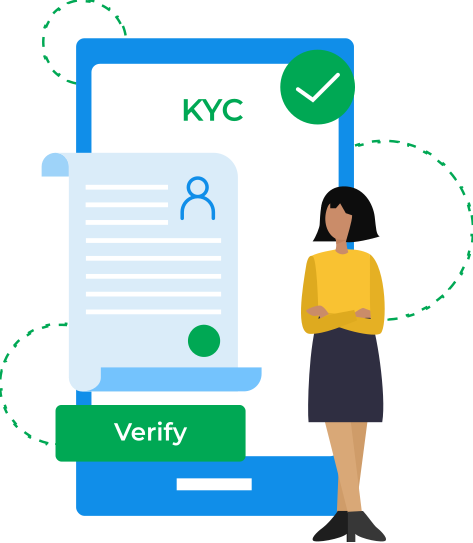

About KYC Verification
The application form I described is for a KYC (Know Your Customer) Verification Application that uses Aadhaar-based verification. This form is typically used for various purposes, such as:
- Digital Identity Verification: Verifying an individual's identity for online transactions, financial services, or government services.
- Customer Onboarding: Verifying customer identity for banking, financial institutions, or other organizations.
- Compliance: Meeting regulatory requirements for KYC and Anti-Money Laundering (AML) compliance.
The application form collects user information, Aadhaar details, and additional verification data (if required) to establish a secure and trustworthy digital identity.

Examples of Applications
- Digital Wallets: Mobile payment apps, e-wallets, or online payment platforms.
- Banking and Financial Services: Online banking, mobile banking, or digital banking platforms.
- Government Services: Online portals for government services, such as income tax filing, pension schemes, or subsidy applications.
- E-commerce Platforms: Online marketplaces or e-commerce websites that require KYC verification for customer onboarding.
- Blockchain-based Identity Verification: Decentralized identity verification systems that use blockchain technology.

At Aadhar 360, we aim to leverage blockchain technology to ensure secure and decentralized identity management, giving users complete control over their personal data.